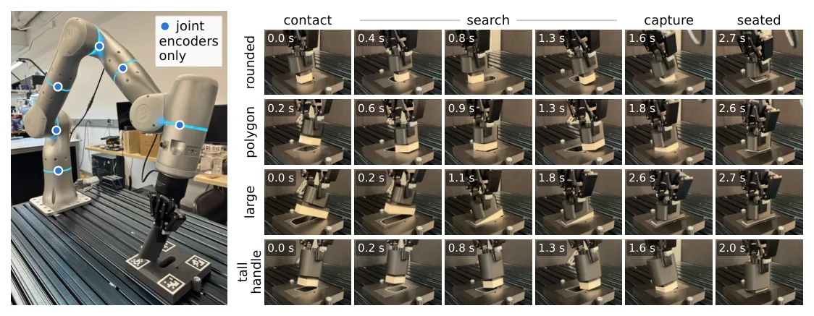
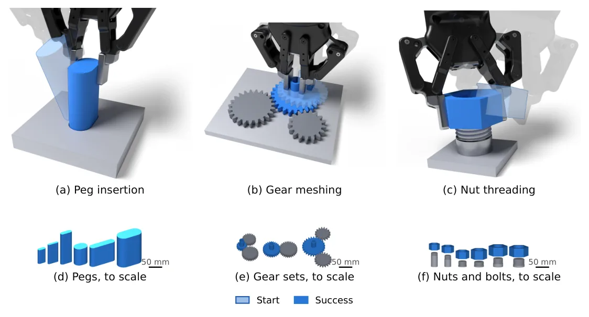
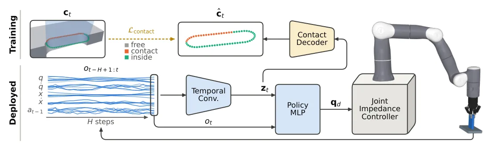
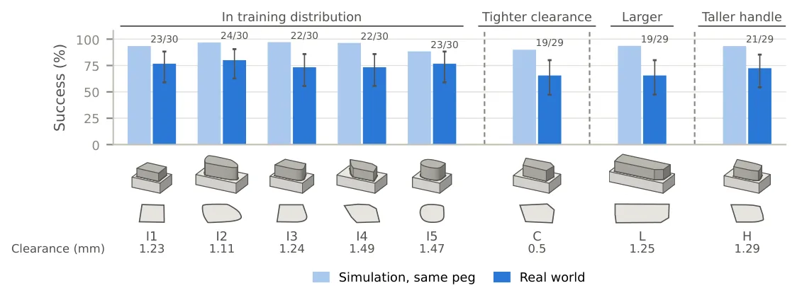

O problema da montagem precisa sem visão
Robôs humanoides e quadrúpedes já exploram há anos a propriocepção para locomoção. Ao sentir as forças que atravessam seus membros, eles conseguem caminhar, correr e subir escadas sem depender de visão. No entanto, esses cenários envolvem contatos grandes e forceiros, onde as juntas se deformam de forma mensurável. A montagem de precisão, por outro lado, opera em um regime oposto: o robô precisa encontrar uma abertura com folga de milímetros, engrenar dentes de engrenagem ou rosquear uma porca, tudo através de contatos leves onde o efeito nas juntas é sutil e fácil de perder.
O paper 'Blind Precise Assembly: Proprioceptive Sim-to-Real Peg-in-Hole for Diverse Parts', dos autores Antonia Bronars, Younghyo Park, Kushal Kedia e Pulkit Agrawal, do Massachusetts Institute of Technology, investiga se os sensores internos de um robô são suficientes para tarefas de montagem complexas. A pergunta central é se a informação contida nos encoders das juntas, combinada com uma história recente de movimentos, carrega dados suficientes para guiar o robô até o alinhamento correto, sem necessidade de câmeras ou sensores de força externos.
Os autores treinam políticas de montagem 'cegas' que observam apenas uma curta história de posições e velocidades das juntas, além de suas próprias ações anteriores. Não há informação visual, de força, torque ou tato. As poses das peças e da fixture (suporte) são desconhecidas, e a pegada (grasp) é randomizada significativamente. O robô deve, portanto, montar as peças exclusivamente através do contato, percebido apenas por sua própria propriocepção.
O treinamento é feito inteiramente em simulação, usando Reinforcement Learning (RL), sobre peças, pegadas e contatos randomizados. As políticas aprendem a realizar três tarefas distintas: inserção de pino (peg insertion), engrenamento de engrenagens (gear meshing) e rosqueamento de porcas (nut threading). O foco principal do paper é validar se essa abordagem funciona e como ela se compara a métodos visuais tradicionais.

Arquitetura e o gerador procedural mjfit
A arquitetura da política é projetada para extrair o estado de contato a partir de sinais ruidosos. O modelo recebe uma janela temporal de 30 observações (0.6 segundos) de posições e velocidades das juntas, a pose e o twist (rotação) do gripper calculados a partir delas, e a ação anterior. Uma Convolutional Temporal Network (TCN) comprime essa história em um vetor latente z_t. Um MLP (Multi-Layer Perceptron) mapeia esse latente e a observação atual para gerar os alvos de posição das juntas. Essa estrutura permite que a política construa uma representação interna do estado de contato, mesmo sem ver a peça.
Um dos maiores desafios técnicos para treinar esse tipo de política é a simulação precisa de contatos com folgas milimétricas. No MuJoCo, criar furos manualmente a partir de primitivas convexas não escala para formas aleatórias. Alternativas automáticas, como decomposição convexa ou colisão baseada em campos de distância assinada (SDF), são menos precisas e mais lentas nessas escalas de folga. Para resolver isso, os autores desenvolveram o mjfit, um gerador procedural que constrói pinos e furos a partir de contornos planares arbitrários, bem como roscas e engrenagens, usando prismas convexos exatos. Isso garante precisão física e velocidade de simulação necessárias para o treinamento em larga escala.
O treinamento exige milhares de assemblies diferentes, cada um simulado com sua folga intacta. A randomização é agressiva: a geometria das peças, as propriedades de contato, a pose da fixture e a pegada da peça são variadas a cada episódio. Isso força a política a aprender invariantes de contato que são robustos a variações geométricas, em vez de memorizar trajetórias específicas.

Resultados: Propriocepção é suficiente?
Os experimentos confirmam que a propriocepção é suficiente para aprender tarefas de montagem precisa. Em geometrias dentro da distribuição de treinamento, todas as três tarefas atingem sucesso quase perfeito. A história das juntas carrega informação suficiente sobre o contato para encontrar aberturas, alinhar dentes e engatar rosca. No entanto, há um trade-off: as políticas cegas tendem a ser mais lentas que as políticas visuais. Como não veem a abertura, a política cega deve procurá-la através do contato, seguindo um caminho menos direto e assentando a peça mais tarde do que uma política que vê a posição exata.
Apesar da lentidão, a eficiência da busca reativa supera métodos baseados em scripts. Um baseline comum para montagem cega é a busca espiral, onde o robô move o pino em espiral para fora até que ele caia no furo. A política aprendida via RL viaja muito menos lateralmente do que esse padrão fixo. Ela usa a informação coletada pelo contato, como o pino pegando a borda da abertura, para ajustar sua trajetria em tempo real, tornando a busca mais eficiente do que um script cego.
Para entender se a política está realmente 'entendendo' o contato ou apenas seguindo padrões, os autores analisaram o vetor latente z_t. Eles rotularam estados em sete modos de tarefa (levantado, ao lado da placa, buscando longe, buscando perto, parcialmente engatado, totalmente dentro, travado) e ajustaram um classificador linear simples para prever o modo a partir de z_t. O classificador separou os modos com alta acurácia (61-73%), muito acima do acaso (14%). Isso prova que o latente codifica informações relevantes para a tarefa e que a política depende dessas inferências para escolher ações.

Generalização: Cego vs. Visual
Um dos achados mais interessantes do paper é a capacidade de generalização. Políticas cegas generalizam melhor para formas e tamanhos de peças não vistos durante o treinamento do que políticas visuais. Isso ocorre porque uma política baseada em visão depende da aparência visual da peça, que pode mudar drasticamente com novas geometrias. Já uma política cega depende da peça apenas através de seus contatos físicos. Se o contato físico se mantém consistente (mesma folga, mesma rigidez), a política consegue se adaptar, mesmo que a peça pareça diferente visualmente.
Em comparações controladas na simulação, políticas visuais sofrem uma degradação maior quando expostas a novas geometrias, enquanto as políticas cegas mantêm um desempenho mais estável. Isso não significa que a visão seja inútil, mas destaca uma vantagem específica da propriocepção pura em cenários de alta aleatoriedade geométrica onde o calibração visual é cara ou difícil de manter.
Os autores também verificaram que a política cega não aprende padrões fechados (open-loop). Ao trocar o latente de um estado por outro de um modo diferente, a ação muda significativamente (1.3 a 3.0 vezes mais do que trocas dentro do mesmo modo). Isso confirma que a política reage dinamicamente ao estado inferido de contato, ajustando seu comportamento em tempo real conforme a peça se encaixa.

Transferência Sim-to-Real e Limitações
A transferência para o mundo real foi realizada sem fine-tuning (ajuste fino). A política treinada em simulação foi implantada diretamente em um robô físico. Ela conseguiu inserir pinos de oito seções transversais diferentes, três deles fora da distribuição de treinamento, com folgas de 0.5 a 1.5 mm por lado. Em 237 ensaios, a taxa de sucesso foi de 73%. Os autores afirmam ser esta a primeira demonstração de tal feito para montagem precisa sem visão ou sensores de força externos.
Apesar do sucesso, há limitações claras. A taxa de sucesso de 73% não é perfeita, e a política é mais lenta que as alternativas visuais. Além disso, o método depende criticamente da qualidade da simulação e da precisão dos encoders. Ruídos excessivos nos sensores ou discrepâncias grandes entre simulação e realidade (sim-to-real gap) podem degradar o desempenho. O paper não aborda a robustez a desgaste mecânico ou variações térmicas que afetam as folgas.
Outra limitação é a complexidade do treinamento. São necessários milhares de assemblies procedurais gerados pelo mjfit, o que exige recursos computacionais significativos para a simulação paralela. Embora o mjfit seja mais rápido que métodos SDF, a escala de treinamento ainda é um barrier de entrada para implementações em larga escala sem infraestrutura dedicada.
Em resumo, o paper demonstra que a propriocepção é uma fonte de informação poderosa e subutilizada para montagem de precisão. Ao eliminar a dependência de visão, os robôs se tornam mais robustos a variações geométricas e menos dependentes de calibração complexa. Embora mais lentos, os agentes cegos aprendem comportamentos reativos e inteligentes que generalizam bem, oferecendo um caminho alternativo viável para a automação industrial em cenários de alta variabilidade.
O que fica
- Robôs podem realizar montagem de precisão usando apenas encoders de juntas, sem câmeras ou sensores de força/torque.
- Políticas 'cegas' generalizam melhor para peças não vistas durante o treinamento do que políticas baseadas em visão.
- A inserção de pinos no mundo real atingiu 73% de sucesso em 237 ensaios, sem fine-tuning (ajuste fino).
- Os autores lançaram um gerador procedural (mjfit) para criar geometrias precisas no MuJoCo, superando métodos convexos padrão.
Paper original: Blind Precise Assembly: Proprioceptive Sim-to-Real Peg-in-Hole for Diverse Parts
Comentários
Nenhum comentário ainda. Seja o primeiro.